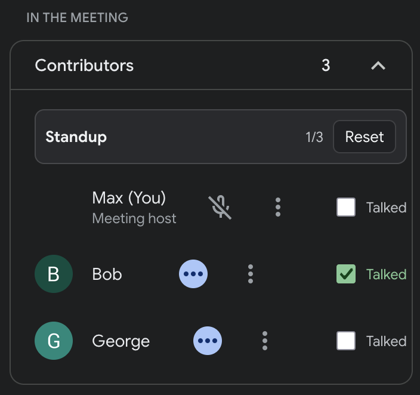

private local bookmarklet
standup_tracker 🙋
A small Google Meet helper for standups adding a compact toolbar to the People panel, automatically detecting who has already spoken, and mirrors that state onto matched video tiles.
standup_tracker is a small toy project and runs entirely inside the current
browser page, does not call a backend, does not send data anywhere,
does not write to storage, and does not persist attendance between
page refreshes.
- scope
- current GMeet page
- storage
- no writes
- backend
- none
- audio
- not accessed

A checklist for your current standup
- panel Adds a small Standup toolbar on top of the Google Meet People panel
- count Shows a talked count for the currently visible participants
- rows Adds a Talked checkbox to each detected participant
- tiles Mirrors talked state onto matched video tiles with a small status marker
- speaking Marks someone as talked after Meet shows them speaking continuously for 3 seconds
- changes Keeps manual changes reversible : check, uncheck, reset, or rerun the bookmarklet to refresh
Drag the bookmarklet to your bookmarks bar
This is a bookmarklet, not a browser extension. There is no extension store install and no extension permission prompt, so it avoids extension-specific browser limits and company extension policies. It still only runs when you click the bookmark, on the current tab.
- Show your browser bookmarks bar.
- Drag
standup_trackerabove into it. - Open a Google Meet call and its People panel.
- Click the bookmark.
- Watch the toolbar count and video-tile status markers.
If dragging does not work in your browser, use copy URL and paste it into a new bookmark's URL field. Running the bookmarklet again refreshes and focuses the existing controls.
It relies on Google Meet internals
- fragile Google can change Meet's DOM, labels, participant rows, or speaking indicators at any time, so the bookmarklet can break without notice
- not saved Talked / not-talked state is kept in page memory only. Refreshing or leaving the Meet clears the session
- visible UI Participant discovery is based on the rendered People panel, not an official participant API
- no audio Speaking detection is inferred from visible Meet UI signals. The bookmarklet does not access audio streams
- best effort Tile markers appear only when a visible tile can be matched to a known participant
It watches the rendered Meet page.
- participants It reads visible role, accessibility, data attribute, title, and row text signals from the People panel
- speakers It looks for visible speaker classes, speaking data attributes, accessibility labels, titles, and status regions
- sync A MutationObserver keeps participant rows, tile overlays, and speaker state synchronized as Meet re-renders
-
selectors
Selector and name-cleaning logic lives in
standup-companion.jsbecause Meet's DOM is not a stable public API
When Meet drifts, inspect the running bookmarklet
The running bookmarklet exposes a small operational API and a set of diagnostics for checking what it can see on the page.